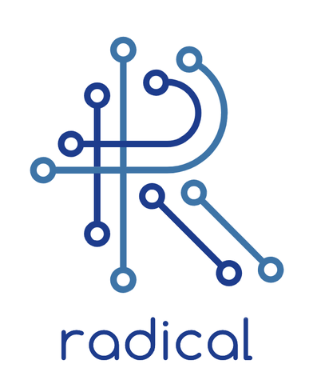

An NSF Cyberinfrastructure for Sustained Scientific Innovation (CSSI) project building an open software development kit for AI-coupled HPC workflows.
Scientific computing increasingly couples AI methods with traditional HPC simulation: AI models replace simulation stages, learn from and steer running simulations, and plan entire computational campaigns. SINAPSE provides the software infrastructure for this class of applications: extensible, reusable components for executing AI and HPC tasks within one environment, and problem-solving frameworks that package the most common AI-coupled workflow patterns for domain scientists.
These capabilities are delivered as the SINAPSE SDK, a curated collection of interoperable, individually packaged components, following the delivery model of the DOE ExaWorks SDK. All SDK components are open source, distributed via PyPI and conda-forge, documented on ReadTheDocs, and tested on HPC platforms.
SINAPSE is a collaboration of Rutgers University (lead), the University of Chicago, Princeton University, and the University of California San Diego, with science drivers in biomolecular kinetics and computational materials design.
Runtime for heterogeneous AI-HPC workflows: services (e.g. inference servers) run alongside simulation tasks on the same allocation.
Asyncio-based workflow scripting library for expressing dynamic task graphs in plain Python.
Broker-based framework connecting applications with HPC resources through firewall-friendly endpoints.
Machine-learned interatomic potentials as a service on shared HPC clusters, integrated with ASE and LAMMPS.
Computational materials science workflow platform for high-throughput quantum chemistry.
Automation layer for SEEKR multiscale milestoning calculations of binding and unbinding kinetics.

This material is based upon work supported by the National Science Foundation under award #2514139. Any opinions, findings, and conclusions or recommendations expressed in this material are those of the authors and do not necessarily reflect the views of the National Science Foundation.